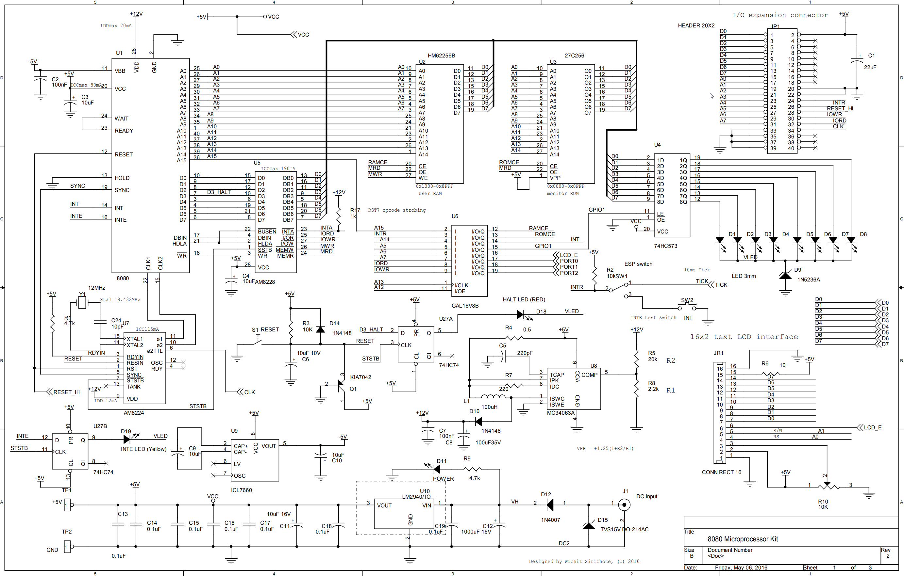
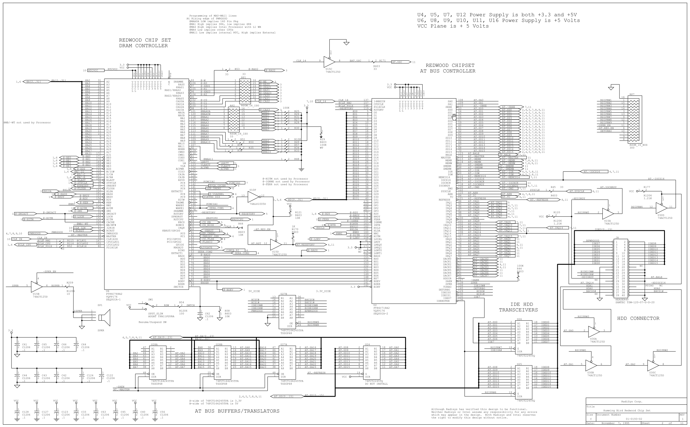
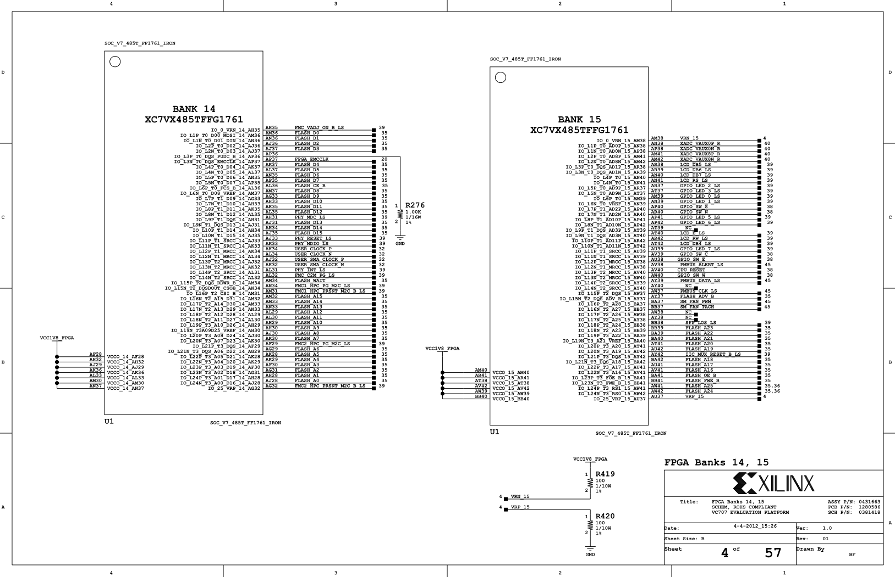
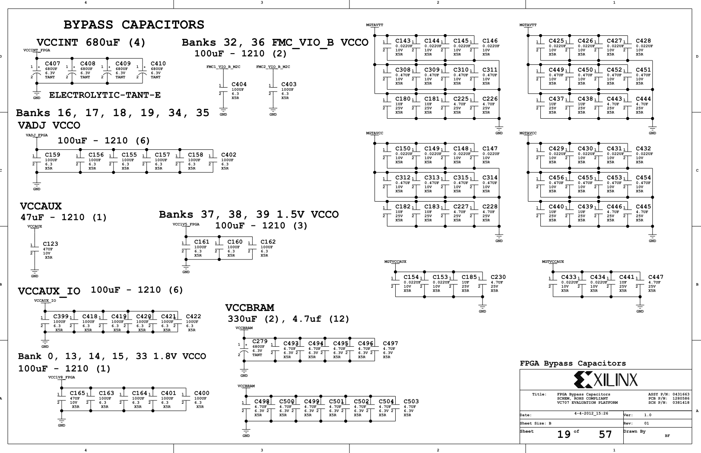
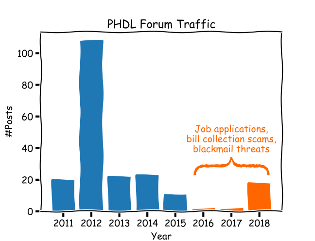
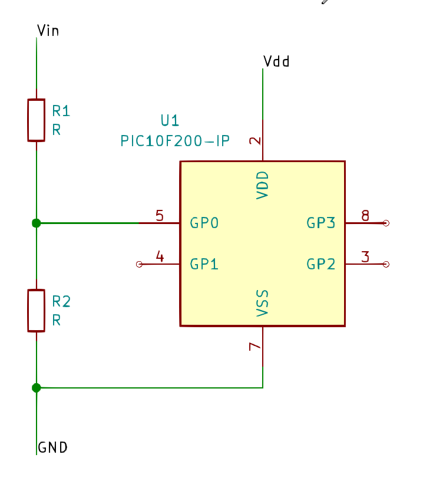
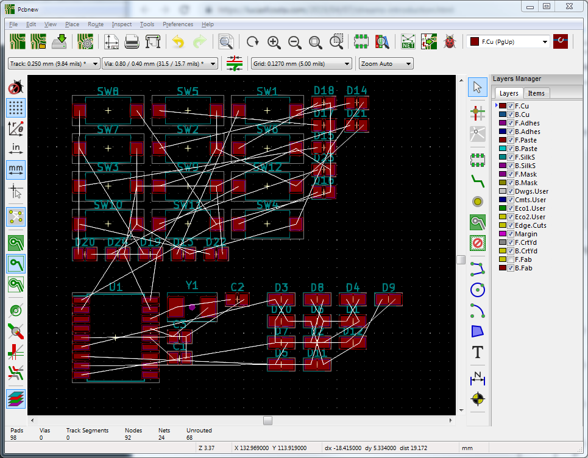
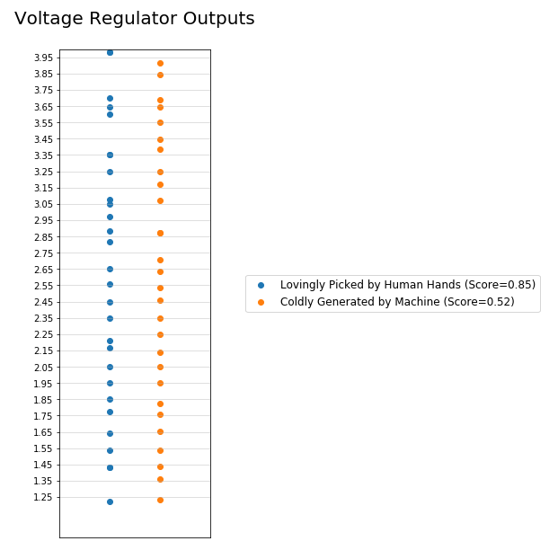
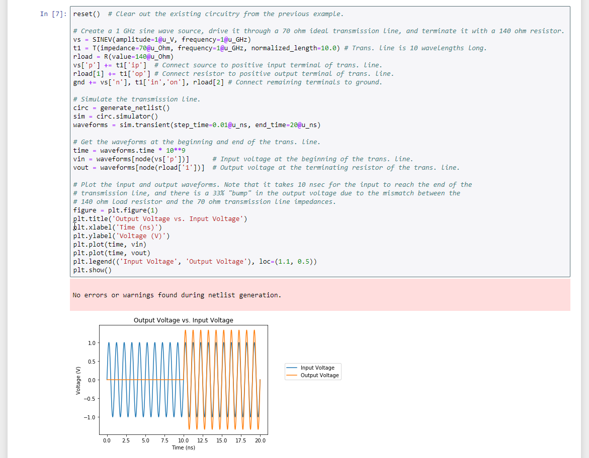

An Uninteresting Slide
An uninteresting bullet point.
Hopefully, things improve…
Seventh-Grade Project
Simple components
Shows what-connects-to-what
Left-to-right signal flow
Clear circuit function
Effort vs. Clarity
Opamp
Effort vs. Clarity
Microprocessor

Tells what-connects-to-what
Complex components with some well-defined I/O
Back-and-forth signal flow between processor and memory
Circuit function is hidden in software
Effort vs. Clarity
80486 Motherboard
80486 Motherboard (cont’d)

North and South bridges.
15 more pages of this stuff.
SOCs, FPGAs, Oh My!

2000-pin devices
Massive integration of analog/digital blocks
Wide buses / serial buses / packet comms
Tells what-connects-to-what
Too many wires => use stubs and labels
Circuit function is no longer depictable
SOCs, FPGAs, Oh My! (cont’d)
SOCs, FPGAs, Oh My! (cont’d)
SOCs, FPGAs, Oh My! (cont’d)

Effort vs. Clarity
Like James Joyce’s “Finnigans Wake”: only the author understands it and nobody else has gotten past page three.
The Progression
Started small and things worked great!
Used a bit more, still OK.
Used even more. Marginal results.
Using heavily. No longer sure what’s going on…
Similar to a drug addiction.
2016
forum.kicad.info/t/pcbnew-without-eeschema-again/3306
“I’d like to create … netlist information from non-graphical tools…”
Typing is faster than drawing
Computers handle text efficiently
Every OS has a text editor
Scripts can automate tasks
Searching is straightforward
Original poster: Alex Lopez (alez).
Such a good idea! Has it been done before?
But PHDL Died

As judged by forum traffic.
https://sourceforge.net/p/phdl/mailman/phdl-devel/?viewmonth=201506
Since the dawn of time, scavengers have learned the value of dead things…
Tasty and Doesn’t Fight Back!
PHDL - the Tasty Bits
Concise, repetitive part instantiation
Concise, bulk connectivity
Encapsulation
Hierarchy
If it’s dead, better nose it to find out why…
Why Did PHDL Die?
Very problem-specific
Lacked general-purpose capabilities
No ecosystem (libraries, utilities)
No user community
She’s wandered way out into the desert and now she’s sad nobody is around to play with her merry-go-round. But nobody will come all the way out into the desert just to play with a toy merry-go-round. Except this guy.
Except this guy!
How to correct these shortcomings of PHDL???
MyHDL
Built upon a general-purpose language: Python
Adds objects for describing digital hardware
Provides a functional simulation engine
Outputs VHDL or Verilog for synthesis
PHDL + MyHDL → SKiDL
Use Python for general-purpose computing
Add part and net objects
Provide methods for connecting them
Output a netlist to PCBNEW
Basic SKiDL Objects
PinPartPinsNetPinsBusNets
Start With a Part
>>> uc = Part('MCU_Microchip_PIC10', 'PIC10F220-IP')
>>> uc
PIC10F220-IP (PIC10F222-IP): 512W Flash, 24B SRAM, PDIP8
Pin U1/2/VDD/POWER-IN
Pin U1/3/GP2/BIDIRECTIONAL
Pin U1/4/GP1/BIDIRECTIONAL
Pin U1/5/GP0/BIDIRECTIONAL
Pin U1/7/VSS/POWER-IN
Pin U1/8/GP3/INPUT
Create Nets
n = Net()n = Net('my_net')b = Bus('my_bus', 5)
Connect Pins and Nets
[ ] to access part pins and bus nets
+= to connect stuff
Pin to net: n += uc[5]
Pin to pin: uc[3] += uc[4]
Bus to part: b[3:0]+=uc['gp3,gp2,gp1,gp0']
Bus to part: b[3:0] += uc['gp[3:0]']
Example #1
vdd = Net('Vdd')
gnd = Net('GND')
vin = Net('Vin')
r1 = Part('device','R',value='4.7K')
r2 = r1(value='2.2K')
vin += r1[1]
r1[2] += r2[1]
r2[2] += gnd
uc = Part('MCU_Microchip_PIC10',
'PIC10F220-IP')
uc['VDD'] += vdd
uc['VSS'] += gnd
uc['gp0'] += r2[1]

A microcontroller sampling a voltage passed through a voltage divider.
Every SKiDL statement corresponds to some element in the schematic.
The effort to create SKiDL or schematic is nearly the same.
The schematic is clearer.
Example #2
b = Bus('chplx', 4)
for hi in b:
for lo in b:
if hi != lo:
led = Part('device','LED')
hi += led['A']
lo += led['K']
Once I have two different nets, I can connect an LED between them.
SKiDL statements correspond to multiple elements in the schematic.
The effort to create SKiDL code is much less than the schematic.
Neither schematic or SKiDL is clearer.
Example #3
@subcircuit
def chplx_leds(b,
ledt=Part('device',
'LED',TEMPLATE)):
for hi in b:
for lo in b:
if hi != lo:
led = ledt()
hi += led['A']
lo += led['K']
b1, b2 = Bus('B1',4), Bus('B2',5)
chplx_leds(b1)
chplx_leds(b2)
Encapsulate the previous example inside a function, and then call it twice to create two charlieplexed LED arrays.
Demonstrates hierarchy/encapsulation and parameterization.
The effort to create the SKiDL code is much less than the schematic.
Example #4
vdd, gnd = Net('VDD'), Net('GND') # power & ground nets.
c = Part('Device','C', TEMPLATE) # capacitor template.
uc = Part('MCU_Microchip_PIC16',
'PIC16F83-XXSO') # Microcontroller.
uc['VDD, VSS'] += vdd, gnd # Attach pwr, gnd to uC.
c_byp = c(value='10uF') # Add bypass capacitor.
c_byp[1,2] += vdd, vss
xtal = Part('Device','Crystal') # Crystal.
uc['OSC1, OSC2'] += xtal[1,2] # Attach crystal to uC.
c1, c2 = c(2, value='10pF') # Crystal trim caps.
c1[1,2] += xtal[1], gnd # Connect trim caps.
c2[1,2] += xtal[2], gnd
chplx_leds(uc['RB[3:0]']) # 12 charlieplexed LEDs.
chplx_sws(uc['RA[3:0]']) # 12 charlieplexed switches.
The charlieplexed switches are just like the charlieplexed LEDs except the LED is replaced with a switch and a diode.
The effort to create SKiDL code is much, much less than the schematic.
Shows the advantages of encapsulation and parameterization.
Netlist → Layout
...
chplx_leds(uc['RB[3:0]'])
chplx_sws(uc['RA[3:0]'])
generate_netlist()

Parts?
How did you find the parts?
>>> search('pic10')
WARNING: Could not open directory ''
MCU_Microchip_PIC10.lib: PIC10F220-IMC (512W Flash, 24B SRAM, DFN8)
MCU_Microchip_PIC10.lib: PIC10F320-IMC (512W Flash, 64B SRAM, DFN8)
MCU_Microchip_PIC10.lib: PIC10F220-IOT (512W Flash, 24B SRAM, SOT-23-6)
MCU_Microchip_PIC10.lib: PIC10F204-IMC (512W Flash, 24B SRAM, DFN8)
MCU_Microchip_PIC10.lib: PIC10F320-IP (512W Flash, 64B SRAM, PDIP8)
MCU_Microchip_PIC10.lib: PIC10F204-IOT (512W Flash, 24B SRAM, SOT-23-6)
MCU_Microchip_PIC10.lib: PIC10F220-IP (512W Flash, 24B SRAM, PDIP8)
MCU_Microchip_PIC10.lib: PIC10F320-IOT (512W Flash, 64B SRAM, SOT-23-6)
MCU_Microchip_PIC10.lib: PIC10F200-IP (512W Flash, 24B SRAM, PDIP8)
MCU_Microchip_PIC10.lib: PIC10F204-IP (512W Flash, 24B SRAM, PDIP8)
MCU_Microchip_PIC10.lib: PIC10F200-IOT (512W Flash, 24B SRAM, SOT-23-6)
MCU_Microchip_PIC10.lib: PIC10F200-IMC (512W Flash, 24B SRAM, DFN8)
SKiDL Fixes Common Problems
Trivialities (Junction dot size? Really!?!)
Repetitive parts (1000 * cap(value=“0.1uF”))
Mistaken disconnections
Power flags (diode['K'].drive=POWER)
Version control (diff just works)
Multiple boards in one project
Freebies!
Standard res/cap values (pypi.org/project/eseries)
Normalizing values (github.com/ulikoehler/UliEngineering)
PySpice - ngspice interfacescipy.optimize
A way to access standard E24, E48 resistor/capacitor values: someone wrote it for me!
A way to recognize that 4K7, 4.7K and 4700 are all the same value: someone wrote it for me!
A way to run SPICE simulations from Python: someone wrote it for me!
A way to optimize the performance of a circuit: someone wrote it for me!
Multi-Voltage Regulator
Connect the 8 resistors and 8 switches to generate as many, 0.1V-spaced voltages as possible with the adjustable regulator.
Machine-Generated Version
I gave the machine a random arrangement of resistors and switches and said “make it better!”
This is what it came up with.
Man vs. Machine

Machine-generated circuit is slightly less clumpy.
Machine-generated can handle less regular cases like unequal number of switches and resistors or different values of resistors.
Documentation
Python comments
Doc strings, Sphinx and autodoc
Attaching notes to circuits, parts, pins, nets, buses
Jupyter
Jupyter is the 800-lb gorilla of documentation.
Jupyter

Rich media: pictures, circuit diagrams, videos.
Include live calculations in your notebook.
Have your documentation generate your circuit.
Show the little girl again, but in a playground.
So where have we ended up? I hope here. The little girl is surrounded by friends. She’s not the center of attention, but that was never the point. They can play with her toy if they want, or they can do their own thing, if they want. And that seems like a pretty good situation. Except for this guy…
But he’s always going to be around. And maybe that’s a good thing: everything has a start. Maybe everything needs an end, too. Like this talk.
Playground Rules
pip install skidl Design examples: xesscorp.github.io/skidl
Netlist converter: netlist_to_skidl